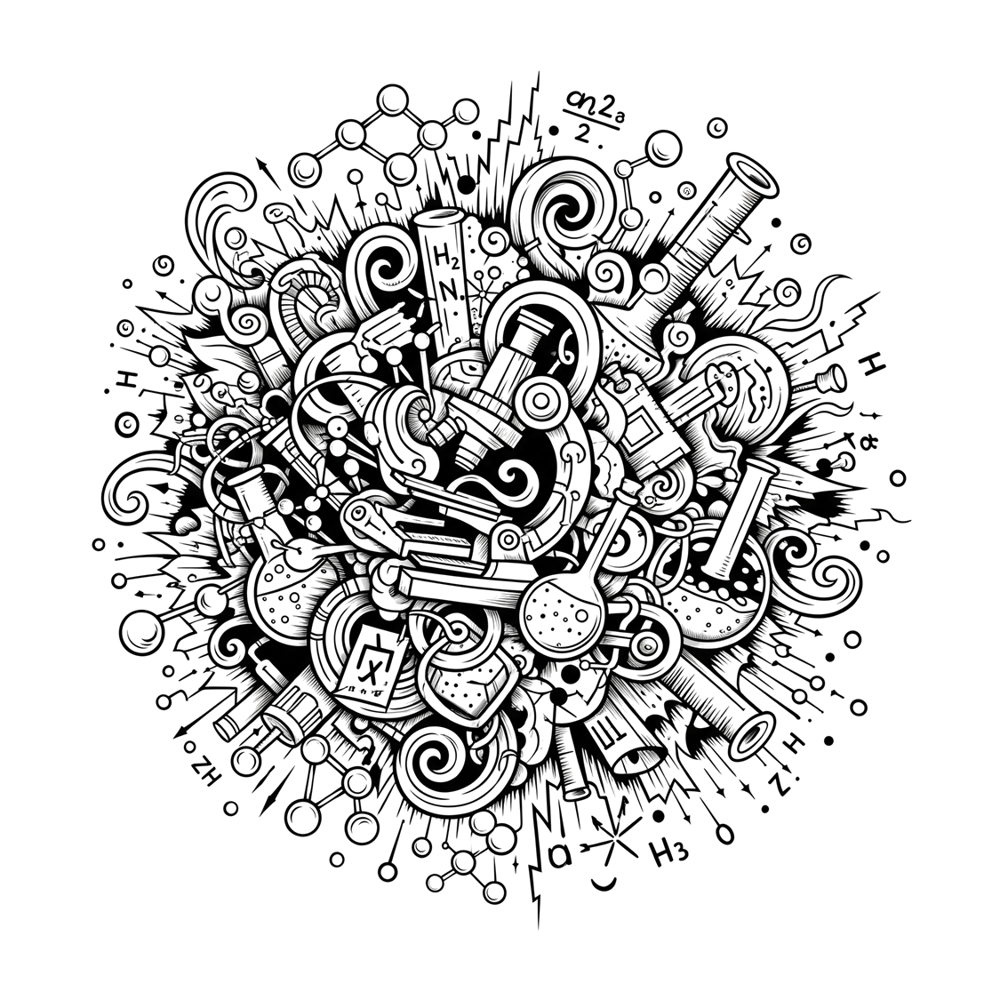

¿Qué son los puntos de carbono y por qué son importantes?
Los puntos de carbono (también conocidos como carbon dots o CDs) son partículas súper pequeñas hechas de carbono, tan diminutas que miden menos de 10 nanómetros (¡mil veces más pequeñas que el grosor de un cabello!). A pesar de su tamaño, tienen propiedades muy especiales: brillan con luz (como si fueran fluorescentes), se disuelven fácilmente en agua o alcoholes, y su superficie está llena de grupos químicos útiles. Gracias a estas cualidades, se pueden usar en campos como la energía (baterías), la medicina (imagen biomédica), y la química (catalizadores).
¿Cómo se hacen?
Existen dos métodos principales:
• Top-down: romper materiales grandes como el grafito hasta hacerlos muy pequeños.
• Bottom-up: construirlos desde moléculas pequeñas (como glucosa o alcohol), a través de reacciones químicas.
Diversos científicos observaron que una mezcla de etanol con hidróxido de sodio (NaOH) cambiaba de color tras varios días, descubriendo la formación de puntos de carbono. Además, si se agregaba un poco de una solución "vieja" a una nueva, la reacción ocurría más rápido, como si se activara sola (autocatálisis) y que además se podía acelerar al aplicar una corriente eléctrica debido a la transformación del etanol en aldehídos, los cuales forman cadenas de carbono que se agrupan hasta crear los CDs.
Este tipo de investigación se relaciona con los puntos cuánticos, por los cuales el Premio Nobel de Química 2023 fue otorgado a Moungi G. Bawendi, Louis E. Brus y Alexei I. Ekimov, por descubrir cómo fabricarlos y controlar sus propiedades ópticas, abriendo nuevas posibilidades en tecnología y medicina.
• Investigar el mecanismo de formación de puntos de carbono a partir de diferentes tipos de alcoholes y su relación con el contenido de agua en la solución.
• Determinar cómo la proporción de agua afecta la síntesis y el contenido de sodio en los CDs.
• Minas de lápices de grafito (2B o 4B)
• NaOH (sosa cáustica)
• Etanol 96º 1 mL
• Alambre de acero inoxidable (Opcional)
• 2 Jeringas con filtro (Kit 3 - paqari openlab)
• 1 Puntero laser (Kit 3 - paqari openlab)
• 2 Tubos eppendorf de 1 mL
• Centrífuga casera (Kit 3 – paqari openlab)
• Cable A (Kit 3– paqari openlab)
• Papel de filtro rápido y lento (Kit 3 – paqari openlab)
• Dispositivo Central de Paqari OpenLab
Realiza todos los experimentos con equipos de protección personal (EPP), guantes, gafas de seguridad y bata.
• Prepara 2 minas de grafito.
• Preparar con precaución 1 mL de solución de etanol concentrada de NaOH 10M.
• Conectar las terminales del cable A a las minas de grafito, positivo (rojo) a la mina con cinta y negativo (negro) a la otra.
• Colocar los electrodos en la celda electroquímica (tubo eppendorf de 1 mL que contiene 1 mL de la solución de NaOH 10M).
• Conectar el cable A a la Central de Paqari OpenLab (~5 V) y esperar por 1 hora mientras se llevan a cabo las reacciones electroquímicas.
• Utilice el puntero laser para observar la dispersión de CDs.
• Utilizando una jeringa, filtrar con el papel de filtro rápido la dispersión de los CDs.
Plantea preguntas y respuestas, por ejemplo:
¿Cómo se produce la formación de los CDs?
¿Por qué se observa la luz del puntero laser al apuntar sobre la dispersión?
¿De qué color es la luz del puntero laser dentro de la dispersión?
¿Cómo puedo determinar la calidad de los CDs?
¿Es posible mejorar el rendimiento y calidad de los CDs?
¿Para qué aplicaciones puedo utilizar los CDs obtenidos?
